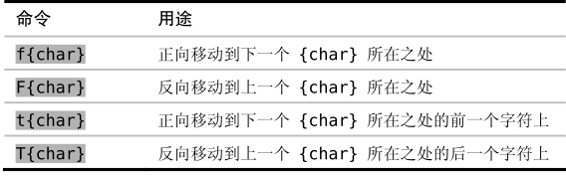

）。
）。技巧49对字符进行查找
Vim 的字符查找命令让我们可以在行内快速移动，并且它们能够在操作符待决模式下很好地工作。
f{char}命令是在 Vim 中移动的最快方式之一。它会在光标位置与当前行行尾之间查找指定的字符，如果找到了，就会把光标移到此字符上；如果未找到，则保持光标不动（参见:h f）。
听起来似乎比较复杂，但在实际操作中非常简单。来看看下面的操作：
本例中，fx命令什么都不做。Vim 会正向查找字符“x”，但因为未能找到匹配的字符，因此光标保持不动。而fo命令找到了字符“o”，因此光标会被移到第一个匹配的字符上。
如果我们是想让光标跳到单词“occurrence”的开头，那么不会再有比两次按键更快的方法了。f{char}命令非常的高效，当它像本例这样完美地工作时，你会觉得好像 Vim能够读到我们的想法一样。
但是，f{char}命令并不是总能工作得这么好。假设我们想把光标移到单词“{char}”中的字符“c”上，看看用fc命令会发生什么：
字符“c”在该行出现了好几次，因此这次我们无法直接命中目标，而是要试几次才能把光标移到想去的位置。幸运的是，我们不必一遍遍地重复输入fc命令。Vim会记录上次执行过的f{char}命令，随后用;命令就可以重复该命令了（参见:h;）。在本例中，我们得连按3次;才能使光标就位。
f{char}和;结合在一起很强大，它让我们用很少的键就可以移动很远的距离。不过由于光标会移到哪里并不是很一目了然，因此我们很容易按;按得忘乎所以，导致错过目标。举个例子，假设我们想把光标移到单词“of”的开头：
我们不小心跳过头了，这个时候，用 , 命令就可以再跳回来。此命令也会重复上次的f{char}命令，不过会按相反的方向进行查找（参见:h,）。还记得技巧4中提到的口诀吗？执行、重复、回退。我把, 当成一个安全网来用，当按;键按过头时，可以用它来回退。
别将反向字符查找命令弃之不用
Vim 为键盘上几乎每个键都赋予了一个功能。如果想创建自定义映射项的话，那么该把它们绑定到哪个键上呢？Vim 提供了一个<Leader>，以此作为用户自定义命令的名字空间。下面的例子显示了如何利用<Leader>来创建我们的自定义映射项：
缺省的<Leader>键是\，因此我们可以按\n和\N来触发上面的自定义映射项。如果你想知道这两个按键映射项完成什么功能，请查阅:h zz。
在有些键盘上，\命令不太容易够到，因此 Vim 允许把<Leader>键映射为其他更方便的字符（参见:h mapleader）。一个普遍的选择是把逗号设置为<Leader>键。如果你也是这么做的，我强烈建议你把反向字符查找命令映射为另一个键。下面给出了一个例子：
;和,命令是互为补充的，如果你去掉了其中一个，那么整个字符查找命令集的用处就会大打折扣了。
查找字符时，可以包含或是排除目标字符
f{char}、;及,命令是字符查找命令集中的部分命令，下表列出了其中的所有命令：

可以把t{char}及T{char}命令当成“直到查找到指定的字符为止”（search till the specified character）的命令，它们使光标停留在{char}前面的那个字符上，而f{char}和F{char}命令则把光标移动到指定字符上。
为什么我们会同时需要这两种字符查找命令呢？乍一看原因并不是很明了。不过下例对它们在实际工作中的用途进行了诠释：
刚开始，我们先把光标直接移到逗号上，因此使用了f,命令。接下来，我们想删除从此处到句尾的所有文本，但又不想删除句号，此时可以用dt.命令完成这项工作。
还有另外一种做法，可以用dfd删除从光标位置到单词“Bond”的最后一个字母间的所有内容。虽然两种做法的最终结果都一样，但是我发现用dt.的话，不需要考虑太多东西。删除到字母“d”并不是一个通用模式，而删除句子的后半句话则是经常会做的操作。因此我们可以把f,dt.训练成手指的下意识动作。
通常，当我想在当前行内快速移动光标时，我倾向于在普通模式中使用f{char} 和F{char}命令；当与d{motion}或c{motion}一起使用时，我会更倾向于使用t{char}及T{char}命令。换句话说，我在普通模式中会用f和F，而在操作符待决模式中则使用t和T。要了解更多细节，请参考技巧12及结识操作符待决模式。
像Scrabble®(4)玩家那样思考
字符查找命令能够节省很多次按键，但它们效率的高低却取决于所选的目标字符。就像Scrabble玩家所能告诉你的，某些字母出现的频率远高于其他字母。如果在用f{char}命令时，你养成了选择非常见字母的习惯，那么一次抵达目标的可能性就会大幅提高。
假设我们想删除下句中唯一的形容词：
要用什么动作命令来把光标移到单词“excellent”上呢？如果我们把该词的第一个字母作为目标的话，需要先按fe，然后还得再输入;;;，才能跳过中间那些干扰字符。在本例中，更好的选择是用fx，这条命令一下就能让我们移动到此单词上，接下来就可以用daw命令删除该单词了（关于aw的详细介绍，请参见技巧52）。
看一下你正在阅读的文本，它们几乎全是由小写字母组成的，而大写字母则要少得多，标点符号也很少。因此，在使用字符查找命令时，最好是选择出现频率比较低的字母作目标字符。多练习一下，你就能学会发现这些字符。